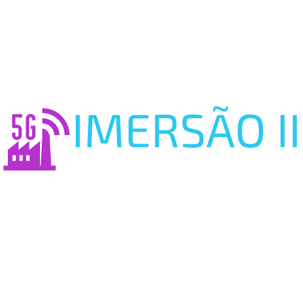

Participe da Imersão II e descubra como o 5G está revolucionando a Indústria 4.0! Em um evento exclusivo da Faculdade SENAI no Centro 4.0, explore as tecnologias que estão transformando a indústria, impulsionando a inovação, a automação e a conectividade.
Especialização em 5G Aplicado à Indústria 4.0
Imagem
Texto
Imagem
Texto
Imagem
Texto
Faculdade SENAI de Minas Gerais
Ensino superior de verdade, com DNA da indústria.
Aqui, você encontra a formação que o mercado exige: tecnologia de ponta, metodologia híbrida e professores com experiência de indústria. Tudo isso com a credibilidade de quem é referência há décadas em educação profissional.
Você aprende na prática, com laboratórios avançados, projetos reais e foco total na transformação digital e na Indústria 4.0.
Cursos superiores em Engenharia e Tecnologia que conectam você ao futuro.
Imagem
Centro 4.0
Imagem
O Centro de Treinamento e Desenvolvimento da Indústria 4.0 do SENAI Minas Gerais é o parceiro da indústria em sua transformação digital.
São especialistas e equipamentos que vão desde qualificar a mão de obra dos profissionais que conduzirão esse processo dentro das fábricas até a pesquisa de soluções estratégicas para a nova revolução industrial.O Centro é o único espaço no país dedicado exclusivamente à tecnologia 4.0 e com o pensamento voltado para as necessidades da nossa indústria.
São estruturas organizadas para atuar de ponta a ponta no processo industrial.